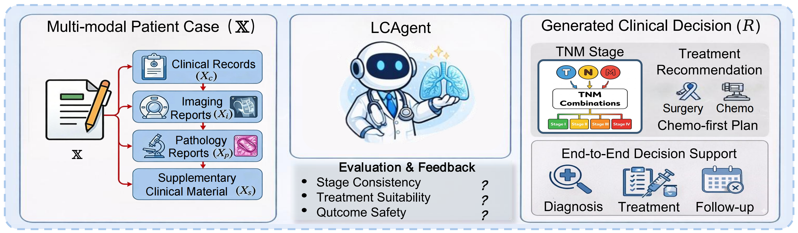

The first standardized multimodal benchmark for lung cancer clinical decision support, built from 1,000 real-world clinician-labeled cases across 10+ hospitals.
LungCURE formalizes three oncological precision treatment (OPT) tasks that span the full clinical workflow for lung cancer diagnosis and treatment. All tasks share the same multimodal patient input.

Given multimodal clinical data (imaging reports, pathology reports, clinical records, supplementary materials), predict the complete TNM pathological stage. A prediction is correct only if the T, N, and M stages are all correct.
Given multimodal inputs and the ground-truth TNM stage as a conditioning signal, generate a guideline-compliant treatment plan. Tests the model's treatment planning capability independent of staging accuracy.
Given only the multimodal clinical materials (no staging input), generate a complete clinical decision. Mirrors real-world deployment where a patient uploads records and receives full decision support without manual staging intervention.
1,000 real-world multimodal clinical cases collected from 10+ hospitals in China (2019–2025), fully de-identified and approved by the Ethics Committee of Peking Union Medical College Hospital.
Sourced from 10+ hospitals across China for geographic and clinical diversity
Imaging reports, pathology reports, clinical records, and genomic testing results
Two-stage annotation protocol by senior clinicians with evidence-based TNM staging
Supports both Chinese (ZH) and English (EN) evaluation for cross-lingual assessment
Fully de-identified; all patients provided informed consent before enrollment
Gold standards based on AJCC, NCCN, and CSCO clinical oncology guidelines
Data Collection Pipeline
Imaging, pathology, clinical records, and gene testing data from hospitals
Privacy de-sensitization and unified management of case files
Interdisciplinary team annotation with expert TNM staging and quality control
Performance of state-of-the-art MLLMs on LungCURE-Core. ZH = Chinese, EN = English. Click column headers to sort. ⚡ = with LCAgent plugin.
* Grok 3 results use OCR pre-processing due to image context limitations. · — indicates the model exceeded maximum supported sequence length (infeasible). · LCAgent rows show performance with the LCAgent framework applied on top of the base model.
A simple yet effective multi-agent plugin that boosts MLLM performance on LungCURE by decomposing the clinical pathway into structured, guideline-grounded stages.
Three concurrently executed agents independently extract T, N, and M evidence; a deterministic rule-based node aggregates the final stage, eliminating stochastic errors.
Decision variables map to a structured feature vector that dynamically activates a scenario-specific expert agent under locally injected guideline subsets as hard constraints.
Strict decision boundaries between stages prevent reasoning errors from propagating across the clinical pathway — a core failure mode of direct MLLM prompting.
Model-agnostic: consistently boosts Qwen3.5-397B, Kimi-K2.5, GPT-5.2, and more in a plug-in way with gains across all three tasks.
@inproceedings{hao2026lungcure,
title = {LungCURE: Benchmarking Multimodal Real-World Clinical Reasoning
for Precision Lung Cancer Diagnosis and Treatment},
author = {Hao, Fangyu and Yang, Jiayu and Zhu, Yifan and Yu, Zijun and
Wu, Qicen and Wang, Yunlong and Li, Jiawei and Liu, Yulin and
Zeng, Xu and Chen, Guanting and Li, Shihao and Ou, Zhonghong and
Song, Meina and Sun, Mengyang and Luo, Haoran and Shi, Yu and
Wang, Yingyi},
booktitle = {Proceedings of the 34th ACM International Conference on Multimedia},
year = {2026}
}